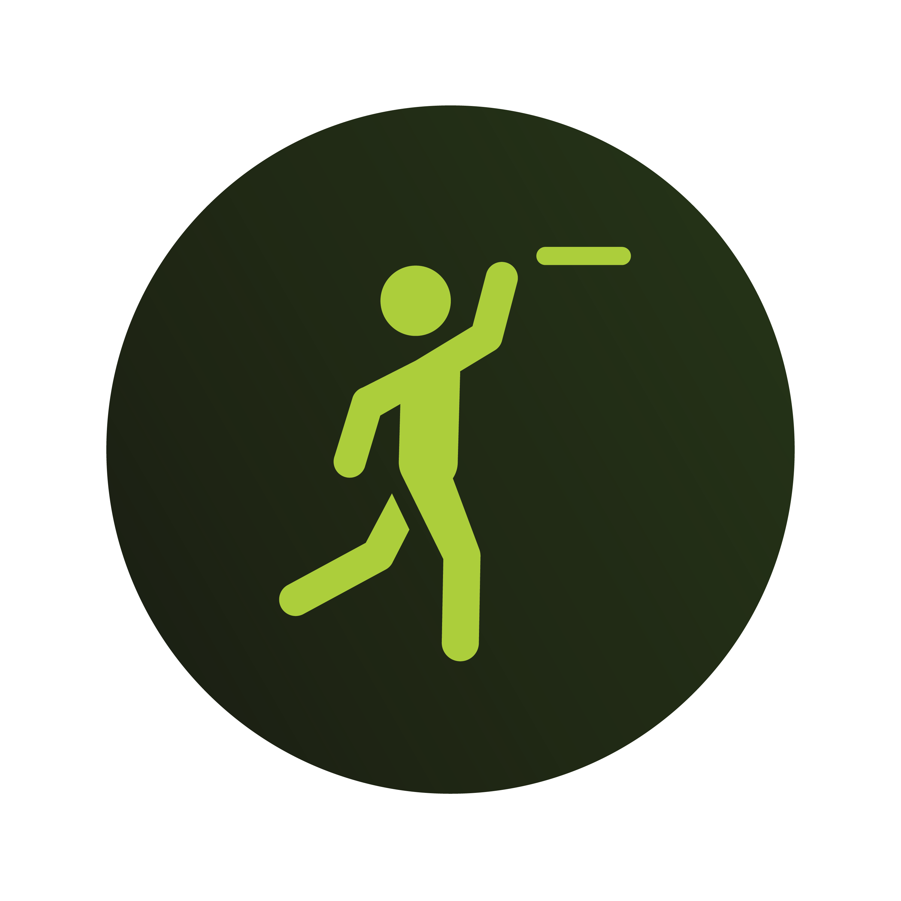
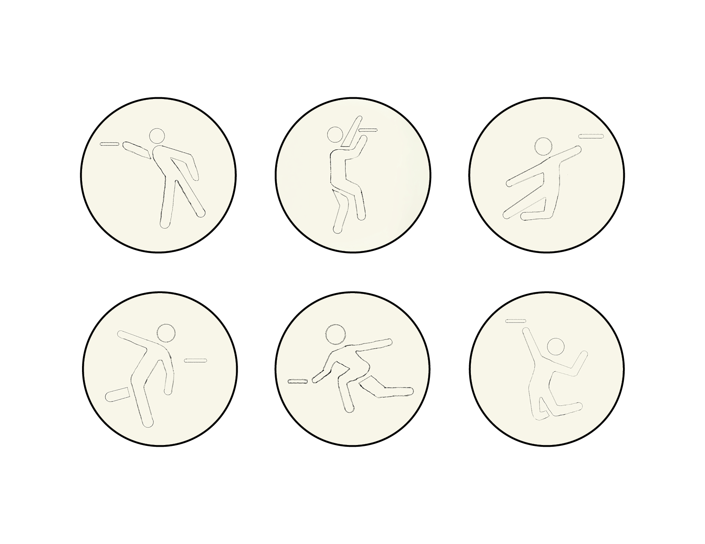
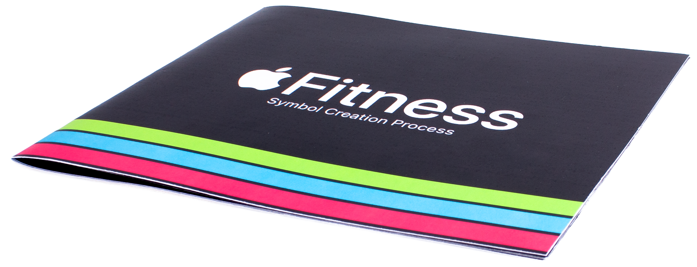
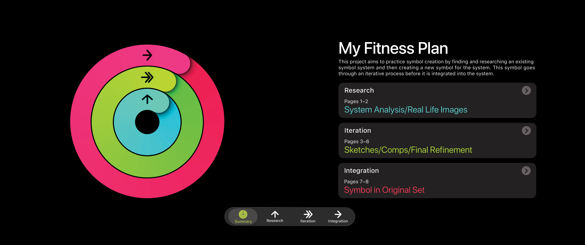
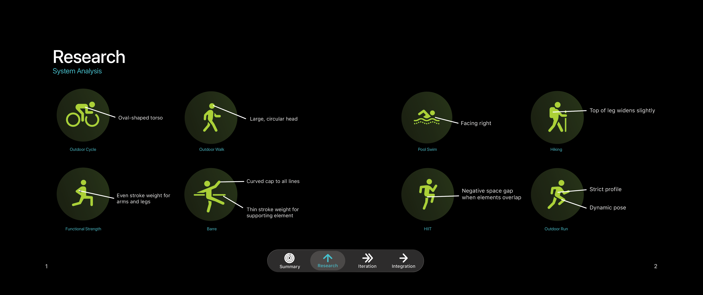
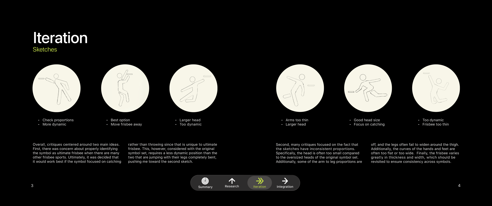
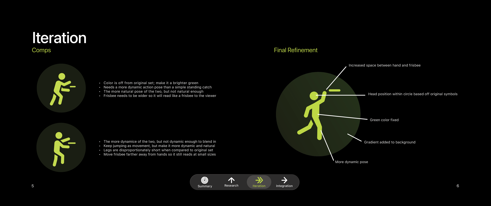
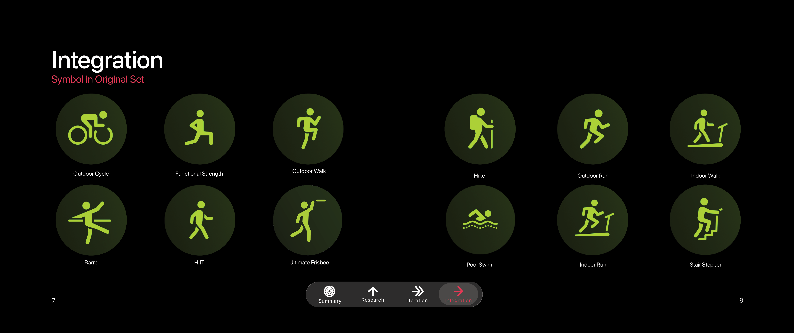

Ultimate Frisbee Symbol
Project Overview
This project aimed to practice symbol creation by finding and researching an existing symbol system and then creating a new symbol for the system. I chose to create an ultimate frisbee symbol for Apple Fitness, working through an iterative process before integrating it into the original set.
Design Challenge
The challenge was to identify the symbol as ultimate frisbee when there are many other frisbee sports, while ensuring consistency with the original symbol set. This required attention to proportions, stroke weight, negative space, and a pose that felt dynamic and natural.


Approach
I began by analyzing the original symbols and researching real-life images before creating sketches. Critiques centered around two main ideas: properly identifying the activity as ultimate frisbee and maintaining consistent proportions.
I chose to focus on catching rather than throwing and refined the head size, arm and leg proportions, and curves of the hands and feet. I then developed digital comps, using feedback to make the pose more dynamic and natural and move the frisbee farther from the hand so it would still read at small sizes.
Outcome
The final symbol incorporated a more dynamic pose, increased space between the hand and frisbee, and a head position based on the original symbols. I also adjusted the green color and added a background gradient before placing the ultimate frisbee symbol into the original set.

Explore the Process Booklet




